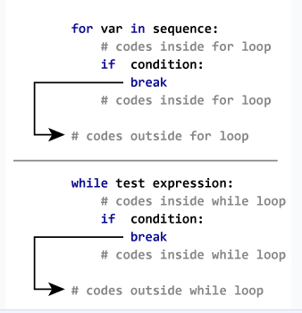

In Python, break and continue statements can alter the flow of a normal loop.
Loops iterate over a block of code until the test expression is false, but sometimes we wish to terminate the current iteration or even the whole loop without checking test expression.
The break and continue statements are used in these cases.The break statement terminates the loop containing it. Control of the program flows to the statement immediately after the body of the loop.
If the break statement is inside a nested loop (loop inside another loop), the break statement will terminate the innermost loop.
Syntax of break
break
The working of break statement in for loop and while loop is shown below.
Example: Python break
# Use of break statement inside the loop
for val in "string":
if val == "i":
break
print(val)
print("The end")
Output
s
t
r
The end
In this program, we iterate through the "string" sequence. We check if the letter is i, upon which we break from the loop. Hence, we see in our output that all the letters up till i gets printed. After that, the loop terminates.